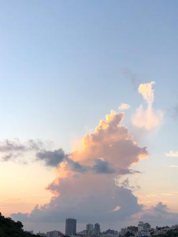
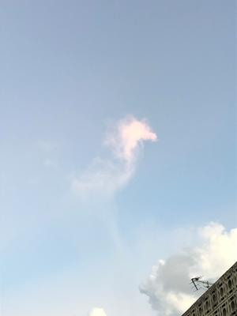
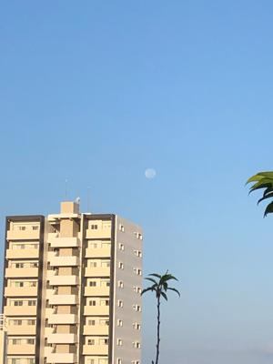
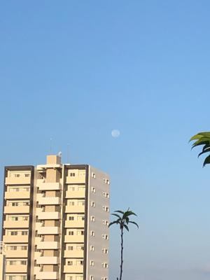

うるがいの話 ある日
最新: 雲を見るうるがいとは 前提知識です
カニの画像をクリックすると『うるがいの話』サイトを表示します|
|
うるがい(ｳﾙｶﾞｲ urugai)とは、『もずくがに』の名前でとても大きくなります。 |
|---|---|
|
|
たながー（ﾀﾅｶﾞｰtanagaa）とは手長えびのことで、何種類かあり大きいのは車 エビぐらいになります。 |

|
ぶながー(bunagaa)とは、赤い髪の毛、赤い身体、そして身長は１ｍ２０ｃｍ ぐらい、川の蟹を食べているの目撃された。場所は沖縄県国頭郡大宜味村のと ある村僕の隣近所に住んでいる爺さんから、聞いた話です。 |
2021年09月23日 (木）雲を見る
16:21
 
 

昨日より腰は痛い、依然はギックリ腰の度に足繁く（あししげく）通っていた
牧志の仲原漢方クリニックの先生から整体で腰の歪みをポッキと直してもらっ
ていたが・・、『今、治っても、また、ゆがみが癖になってまたギックリ腰に
なるから』、それを聞いたあと悟る。ＷＩＴＨギックリ腰、もう５年以上も整
体していない。そのうち、治るだろう。痛いときは空を見上げる、昨日は雲が
今朝は、西の空に満月が綺麗に見えた。